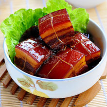

东坡肉相传为北宋词人苏东坡（四川眉山人）所创制，最早发源地是四川眉山。原型是徐州回赠肉， 为徐州“东坡四珍”之一。
宋神宗熙宁十年（1077年）四月，苏轼赴任徐州知州。七月七日，黄河在澶州曹村埽一带决口，至八月二十一日洪水围困徐州，
水位竟高达二丈八尺。苏轼以身卒之，亲荷畚插，率领禁军武卫营，和全城百姓抗洪筑堤保城。经过七十多个昼夜的艰苦奋战，
终于保住了徐州城。全城百姓无不欢欣鼓舞，他们为感谢这位领导有方，与徐州人民同呼吸、共存亡的好知州，纷纷杀猪宰羊，
担酒携菜上府慰劳。苏轼推辞不掉，收下后亲自指点家人制成红烧肉，又回赠给参加抗洪的百姓。百姓食后，都觉得此肉肥而不腻、酥香味美，
一致称他为“回赠肉”。此后，“回赠肉”就在徐州一带流传，并成徐州传统名菜。这在《徐州文史资料》、《徐州风物志》、《徐州古今名馔》中都有记述 [1] 。